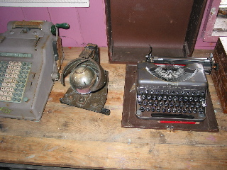

Day 6 &mdash 2003/01/30
Woke up at 6:00 to a massive thunk followed by a grating sound. Peeking out the porthole in my room, all I could see was ice chunks. So I bolted up and got clothing on and rushed outside to take some pictures. I had thought to sleep in today, guess not. Even so, seeing the ship surrounded by ice chunks was worth getting up early.
First landing: Vernadsky Base and Wordie Hut
No penguins here. (Yes, that is suprising enough to note.)
Wordie Hut is yet another leftover British base. There was a guest log here though, and I signed in with everyone else. This base is occasionally used by the people of the nearby base when the want to get away from the others for a bit.
Saw two things in the Wordie hut that caught my eye. A Guinness sign and a strange device next to a typewriter. Anyone know what that thing with the glass ball is?

Vernadsky Base is a Ukrainian station. It used to be a British station named Faraday, and was one of the two stations that found the ozone “hole”. The base is filled with weather and atmosphere monitoring equipment. It seemed to be largest station we visited, and all the walkways were raised. Didn't take pictures of the inside of the base, since I was too busy looking at the equipment and trying to figure it all out.
Second Landing: Petermann Island
Weather was slightly disagreeable this time out, a light rain/snow was falling the whole time. Made somethings a bit slippery, but was still fun to get out and see stuff. Didn't take that many pictures because of the rain on this landing.
Many of the penguins would “swim” across the snow fields. They did their waddle-walk across the rocks up to the snow. Then they would lay down, and use their wings and feet while sliding on their bellies. They could move much faster this way.
Dinner (or supper) tonight was a barbecue. Which means of course we ate outside. There was a strong south wind the whole time, and that made it really cold. Everyone was trying to eat with all there gear on. It was kind of funny, and would have been funnier if I hadn't been outside doing the same thing. The food was good though, as was the mulled wine.